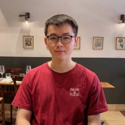
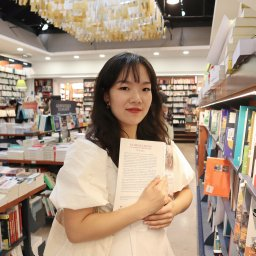
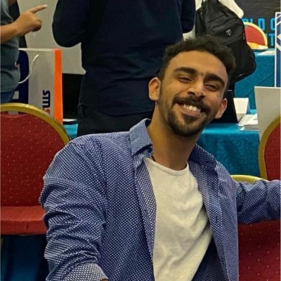
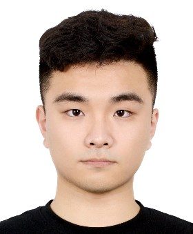
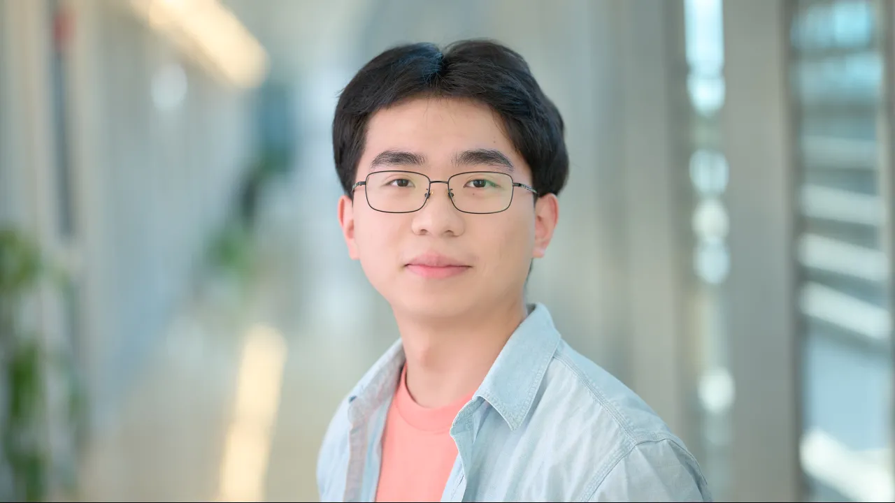
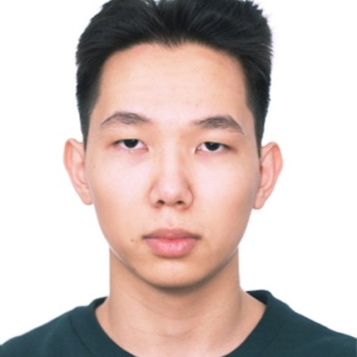
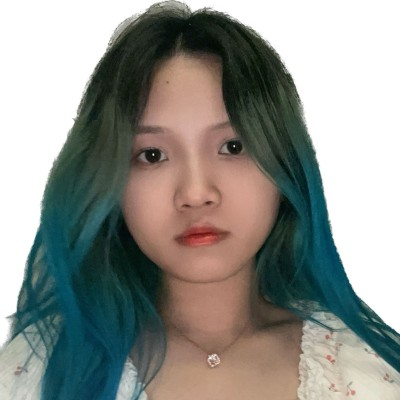

Panos Kalnis

panos.kalnis@kaust.edu.sa
Tel: +966 12 8080343


Building 1, 4416
4700 KAUST
23955 Thuwal
Saudi Arabia
I am a Professor at the King Abdullah University of Science and Technology (KAUST), and served as Chair of the Computer Science program from 2014 to 2018. In 2009 I was a visiting assistant professor at Stanford University. Before that, I was an assistant professor at the National University of Singapore (NUS). In the past, I was involved in the designing and testing of VLSI chips and worked in several companies on database designing, e-commerce projects, and web applications. I served as associate editor for the IEEE Transactions on Knowledge and Data Engineering (TKDE) from 2013 to 2015, and on the editorial board of the VLDB Journal from 2013 to 2017.
I received my BEng from the Computer Engineering and Informatics Department, University of Patras, Greece in 1998 and my PhD from the Computer Science Department, Hong Kong University of Science and Technology (HKUST) in 2002.
My research interests include Big Data, Parallel and Distributed Systems, Large Graphs, and Systems for AI, with emphasis on efficient inference for LLMs.
I am a member of the Generative AI Center of Excelence.
Open Positions
The Infocloud group in collaboration with the GenAI Center of Excelence has several openings at all levels (MSc, PhD, PostDoc, Research Scientist).Research Scientists and PostDocs: Please send your CV and research interests to: panos.kalnis@kaust.edu.sa
PhD and MSc students: Please apply through the KAUST Graduate Admissions: https://admissions.kaust.edu.sa. When applying, please select "Panos Kalnis" as your preferred advisor.
KAUST is a young, vibrant, and international research university located on the shores of the Red Sea in Saudi Arabia.
It offers a unique research environment with state-of-the-art reserach facilities, including the IBEX cluster and the Shaheen-3 supercomputer with 2,800 NVidia H200 GPUs,
with a strong emphasis on interdisciplinary collaboration. There is ample research funding, support for translational research and entrepreneurship, and a strong connection to industry.
In particular, KAUST is focusing on AI and its applications in various domains, including healthcare, energy, and the environment.
We offer highly competitive salary and benefits, full scholarships to all students, free housing, and access to impressive recreational facilities in a vibrant international environment.
Selected Publications
Check here for a complete list: Google Scholar- RED: Effective Trajectory Representation Learning with Comprehensive Information, PVLDB, 2025.
- A Universal Question-Answering Platform for Knowledge Graphs, ACM-SIGMOD, 2023.
- SLAMB: Accelerated Large Batch Training with Sparse Communication, ICML, 2023.
- Scaling Distributed Machine Learning with In-Network Aggregation, USENIX-NSDI, 2021.
- GRACE: A Compressed Communication Framework for Distributed Machine Learning, IEEE-ICDCS, 2021.
- DeepReduce: A Sparse-tensor Communication Framework for Federated Deep Learning, NeurIPS, 2021.
- On the Discrepancy between the Theoretical Analysis and Practical Implementations of Compressed Communication for Distributed Deep Learning, AAAI, 2020.
- Matrix Algebra Framework for Portable, Scalable and Efficient Query Engines for RDF Graphs, EuroSys, 2019.
- ScaleMine: Scalable Parallel Frequent Subgraph Mining in a Single Large Graph, SuperComputing, 2016.
- Private Queries in Location Based Services: Anonymizers are not Necessary, ACM-SIGMOD, 2008.
Projects
Efficient inference for Large Language Models
LLMs for accurate timeseries prediction
Compression of large scientific data via machine learning
GraphCompAnalysis of spatio-temporal / GIS data using RAG (Retrieval Augmented Generation)
Team Members
Guozhong LiPostDoc |
Chenxi LiuPostDoc |
||
Muhannad AlhumaidiPhD candidate |
Chen QiuPhD candidate |
Ziwu LiuPhD candidate |
Chao FeiPhD candidate |
 Anfal AlshehriMSc student |
Yeskendir ZharkynbekMSc student |
Jingwen LiaoResearch assistant |
Alumni
Research Scientists
- Didier Barradas Bautista (2022): "Enhanced Protein Docking using Machine Learning" — Data Scientist at KSL, KAUST, Saudi Arabia.
- Lisi Chen (2020–2021): "Machine Learning for Trajectory Data" — Associate Professor, UESTC, Chengdu, China.
- El Houcine Bergou (2019–2021): "Federated Learning" — Assistant Professor, Mohammed VI Polytechnic University, Morocco.
- Shuo Shang (2016–2018, 2020–2021): "Spatiotemporal Databases and Trajectories; Recommendation Systems for Spatio-temporal Data" — Professor, UESTC, Chengdu, China.
Postdocs
- Aritra Dutta (2019–2021): "Convergence Analysis of Distributed Machine Learning Algorithms" — Assistant Professor, University of Central Florida, FL, USA.
- Essam Mansour (2009–2013): "Indexing of Very Long Strings" — Associate Professor, Concordia University, Canada.
- Chedy Raissi (2008–2009): "Graph anonymity" — Research Scientist, INRIA, France.
PhD Alumni
- Hang Xu (2019–2024): "Compressed Communication in Deep Learning" — Engineer at HPC-AI Tech, Singapore.
- Ibrahim Abdelaziz (2012–2018): "Scalable Discovery and Analytics on Linked Web Data" — Researcher, IBM Watson, NY, USA.
- Fuad Jamour (2012–2019): "Continuous Evaluation of Betweenness Centrality in Evolving Graphs" — Engineer, Amazon, San Francisco, CA, USA.
- Zuhair Khayyat (2009–2017): "Scaling Big Data" — CTO, Lucidya, Saudi Arabia.
- Ehab Abdelhamid (2010–2017): "Scalable Frequent Subgraph Mining" — Engineer, DataBricks, San Francisco, CA, USA.
- Amin Allam (2010–2017): "Efficient Disk-Based Techniques for Manipulating Very Large String Databases" — Lecturer, Cairo University, Egypt.
- Razen Al-Harbi (2011–2016): "Accelerating SPARQL Queries and Analytics on RDF Data" — Senior Engineer, Aramco, Saudi Arabia.
- Othaman Soufan (2011–2016 co-advised with V. Bajic): "Classification Methods for Highly Imbalanced Data" — Assistant Professor, St. Francis Xavier University, Canada
- Wail BaAlawi (2011–2016 co-advised with V. Bajic): "Predicting New Interactions from Chemical Compounds to Proteins" — Research Scientist, Princess Margaret Cancer Centre, Canada.
- Dimitrios Kleftogiannis (2011–2016): "Identifying Enhancers in DNA Sequences using Ensemble Classifiers" — Senior Researcher, Univeristy of Bergen, Norway.
- Majed Sahli (2010–2015): "Mining Motifs in Very Long Sequences" — Cybersecurity Consultant for the Saudi Government, Saudi Arabia.
- Xue Mingqiang (2007–2012): "Private Information Retrieval" — Institute for Infocomm Research (I2R), A*STAR, Singapore.
- Gabriel Ghinita (2004–2008): "Spatio-temporal Anonymity" — Associate Professor, University of Massachusetts, Boston, MA, USA.
MSc Alumni
- Nura Aljaafari (2016–2018): "Ichthyoplankton Classification Tool using GANs and Transfer Learning" — AI researcher, University of Manchester, UK.
- Emaad Manzoor (2013–2015): "Influence Maximization in Social Networks" — Assistant Professor, Cornell University, NY, USA.
- Ruogu Ding (2010–2012): "User Oriented Trajectory Search for Trip Recommendation" — Senior Engineer, Miaozhen Systems, Beijing, China.
- Yasser Ibrahim (2009–2012): "An Adaptive SPARQL Engine with Dynamic Partitioning" — Engineer, Microsoft, Redmond.
- Mohamed El Saeedy (2009–2011): "GraMi: Generalized Frequent Pattern Mining in a Single Large Graph" — PhD student, EPFL.
- Zhu Zhenzhou (2004–2006): "Information Retrieval in P2P systems" — MPhil, National Univ. of Singapore.
- Mohammed Kasim Imthiyaz (2002–2004): "Iceberg Queries on Distributed and Centralized Databases" — MPhil, National Univ. of Singapore.
- Li Xiaochen (2002–2004): "Spatial Joins on Mobile Computers" — MPhil, National Univ. of Singapore.
- Konstantinos Karatsenidis (2019–2020): "GRACE: A Compressed Communication Framework" — MSc-coursework, KAUST.
- Ali Almajed (2020–2021): "Improving Classification of Protein-Protein Docking Models" — Engineer, Aramco.
- Yuanchao Chen (2017–2019): "Machine Learning for Scientific Data" — MSc-coursework, KAUST.
- Ziyad Al Ghamdi (2015–2017): "Large Scale Betweenness Centrality" — Engineer, Aramco.
- Guoda Chen (2009–2011): "Graph Mining" — Software Engineer, Yahoo, CA.
- Ahmed El-Roby (2009–2011): "Finding Maximal Repeats in Very Long Strings" — Assistant Professor, Carleton University.
- Reda Eldehiry (2009–2011): "Improved I/O Performance for BLAST" — Software Engineer, Amazon, Seattle.